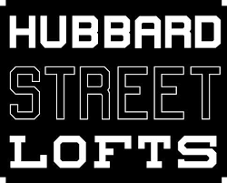

Annual Open House and Huge Art Exhibit at Hubbard Street Lofts
It’s the annual Open House and Huge Art Exhibit at Hubbard Street Lofts on Friday, May 1st.
Get a behind-the-scenes look at a collection of some of Chicago’s most talented artists, designers, organizations and galleries — all under the 1821 roof.
Each tenant will be opening their doors for the annual night of community delight. “Huge Art Show and Open Studios” event presents our established art collectives as we foster, develop and promote the growth of over 300 artists through our shared and community studio spaces.
During our open studio night, we invite the public to get immersed in the creations of over 40 professional working artists’ studios, and to explore the many additional art-based businesses located throughout Hubbard Street Lofts. We are excited to share our work and our processes with you!
Join us as we celebrate the progress we are creating in Chicago together.
Art. Music. Food Trucks.
6pm – 10pm
Hubbard Street Lofts